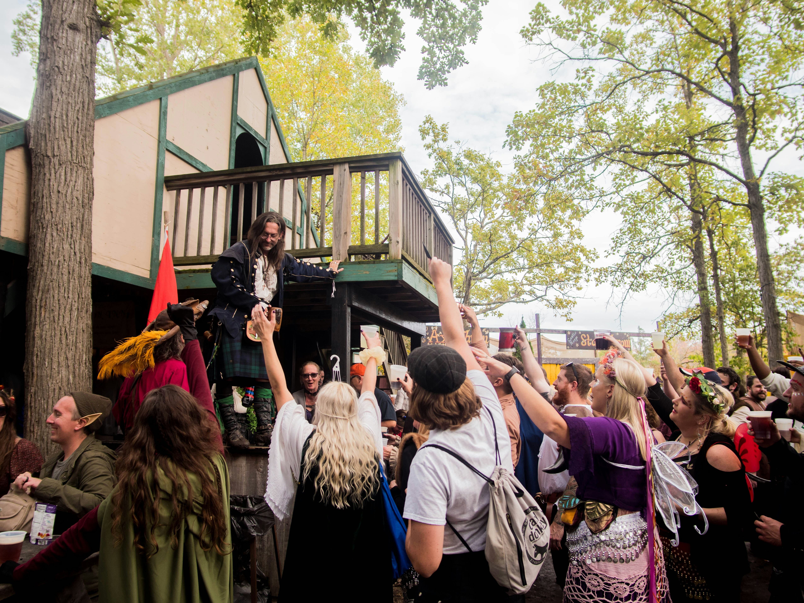
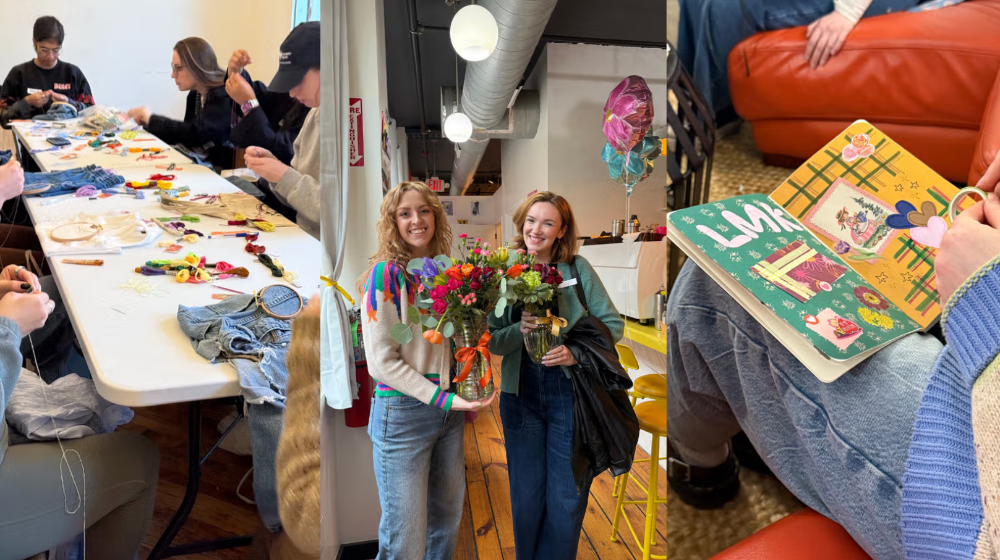

What is Trinket Trading?
Where to Trade
Get Inspired

At EDM festivals, trinket trading is a way to communicate in a space where conversations are challenging, fostering community. Common gifts include handmade bracelets, toys, or rubber ducks. Anything goes!
Some renaissance festivals allow patrons to trade small trinkets such as pins or coins. Because Renaissance festivals are more environmentally-conscious, plastic and the mass-produced trinkets should be avoided. Trinkets should not involve larger, more ornate objects which may impact vendor sales. Be sure to check your the faire's guidelines before participating.


Join a local craft club to meet fellow enthusiasts and trade handmade trinkets. These clubs often host meetings where members can showcase their creations and exchange items they've made. Philadelphia's Drunken Knitwits and Let Me Know Club have both hosted successful trinket swap events.